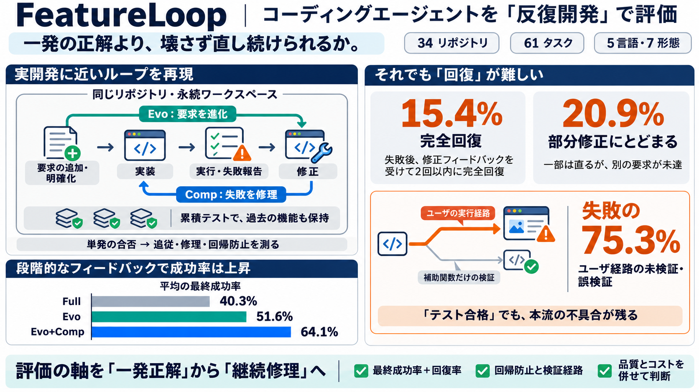

FeatureLoop: Benchmarking Coding Agentsunder Evolving Requirements
| | StrictPass ↑\uparrow | | | Evo+Comp path | | | --- --- --- | Model | Full | Evo | Evo+Comp | FDAC ↑\uparrow | N…

コーディングエージェントが、要求の変化と失敗修正を繰り返す「実開発に近いループ」で、壊さずに最後まで到達できるかを評価するベンチマークです。
実務では仕様が後から変わり、失敗（バグ報告）を受けて修正し、既存機能を壊さない必要があります。だから評価も「最終的に正解か」だけでなく「開発ループ全体」を見るべきです。
FeatureLoopは「同じリポジトリ／同じ永続ワークスペース」で、変更と修正が積み上がる状況を再現します。新機能追加だけでなく、失敗修理が次の変更でも崩れないことまで問います。
各タスクは、段階的な要求変更と失敗報告を同一リポジトリ／永続ワークスペース上で繰り返し適用します。エージェントは実行可能テストに基づいて振る舞いを調整し続けます。
FeatureLoopは34リポジトリから抽出した61タスクを用意し、5言語・7ソフトウェア形態をカバーします。各タスクで Evo（進化）→ Evo+Comp（完了）へと難度と情報が増えます。
各設定で「累積的に直せたか」「過去機能を維持できたか」を評価します。
平均では、FullよりEvo、さらにEvo+Compの方が最終成功率が高くなります。段階的要件＋失敗修正のフィードバックが効くことを示しています。
FeatureLoopの価値は、evolution feedback（要求の追加・明確化）とcompletion feedback（失敗報告・修正）を別種として扱い、次の誤りが「次手の選び方の失敗」なのか「直し方の失敗」なのかを見えやすくした点にあります。
失敗状態からの完全回復は全モデル平均で15.4%に留まります。さらに、局所的に直せても他の要求が未達のまま残るケースが20.9%あります。
最終成功率が高くても「手戻りの少なさ」が保証されない可能性が示されます。
失敗の75.3%で「ユーザが実際に辿る実行経路での検証不足／誤検証」が見られます。つまり“直したつもり”でも、信じているテスト・経路がズレると失敗が残りやすい可能性があります。
失敗の分析では、実際にユーザが通る経路ではなく、補助関数や代理コンポーネントだけが検証されている場合があると示唆されています。評価の焦点がズレると、性能の解釈も誤り得ます。
トークン消費の差も大きく、品質と効率のトレードオフが読み取れる点も重要です。
FeatureLoopは、コーディングエージェントの評価を「正解を出す」から「変化し続ける要求に対し、壊さず直し、積み上げを維持できるか」へ移す設計です。失敗の種類分解（evolution/completion）が改善仮説を作りやすくします。
FeatureLoopは、反復開発で必要な追従・回帰防止・修理の持続性を測るための説得力あるベンチマークです。最終成功率だけでなく、回復率や検証設計まで併せて見ると、意思決定により役立ちます。
| | StrictPass ↑\uparrow | | | Evo+Comp path | | | --- --- --- | Model | Full | Evo | Evo+Comp | FDAC ↑\uparrow | N…
Why it’s #12: The free tier is why it ranks, and the reason it sits this low is the benchmark record, plus three new pai…
OpenAI President Greg Brockman called the September 3 release a "generational leap." The company says it now leads on co…
| Model | Result | Basis · observed · source | --- | GPT-6 Astra (Xhigh)OpenAI | 58.3% | self reported · 2026-09-22 · op…
OpenAI released GPT-6.1 Sol, a new AI model that approaches GPT-6 Astra performance in agentic coding, computer use, and…